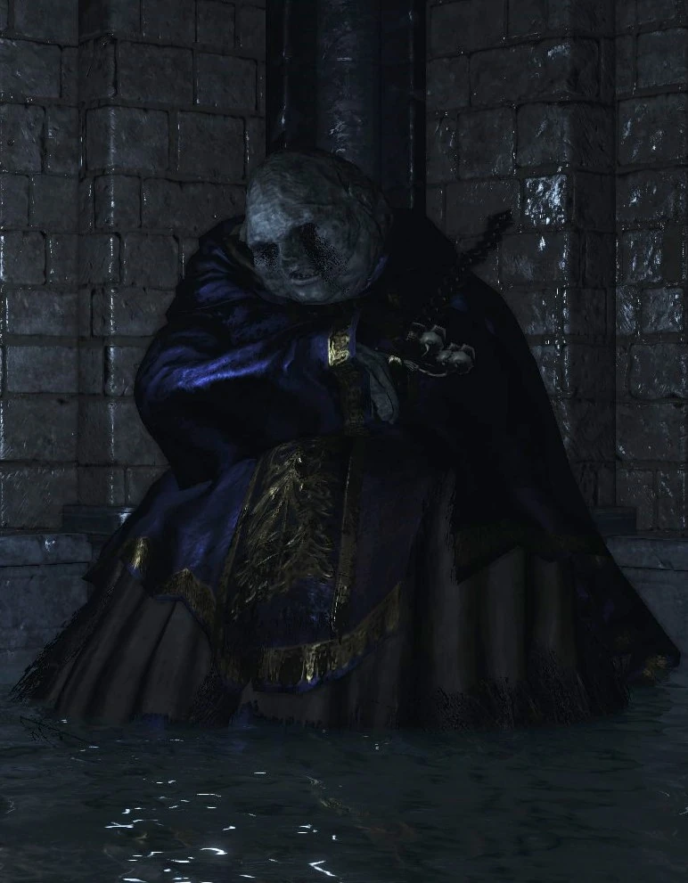

← Volver
← Volver
El Archidiácono McDonnel es un NPC de Dark Souls III el cual te permite, luego de interactuar con él, unirte al aquelarre los Fieles de Aldrich.
¿Dónde se puede encontrar al Archidiácono McDonnell en Dark Souls III? En Irithyll del Valle Boreal, desde la hoguera del Pontífice Sulyvahn, ir directo por la puerta, hacia la izquierda donde se sube por las escaleras y derecho por el campo abierto con los gigantes muertos. Ir a través de la puerta hasta el final. La esquina sobre la izquierda del cuarto puede ser golpeada para revelar una escalera. Descender por la escalera y derrotar a los enemigos para encontrar al Archidiácono McDonnell. Con él, nos podemos unir al Aquelarre de los Fieles de Aldrich. Se le pueden ofrecer Escorias Humanas para subir de rango en el aquelarre.

 ↑
↑